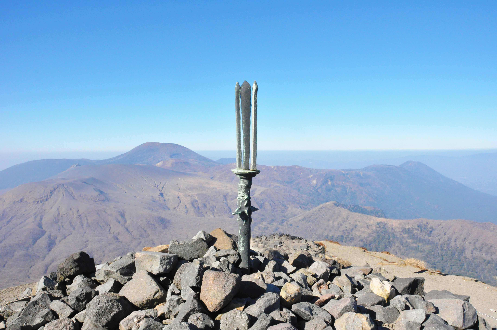
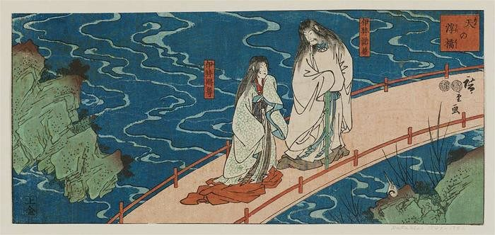
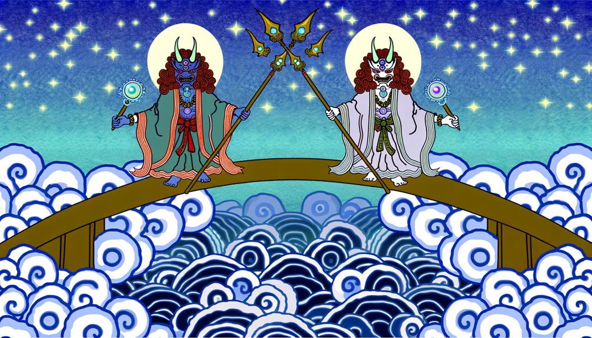
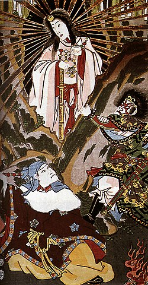
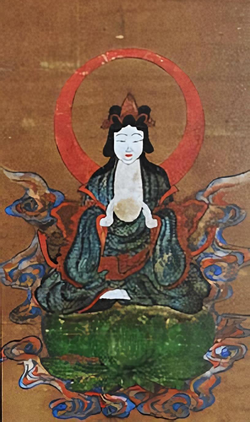
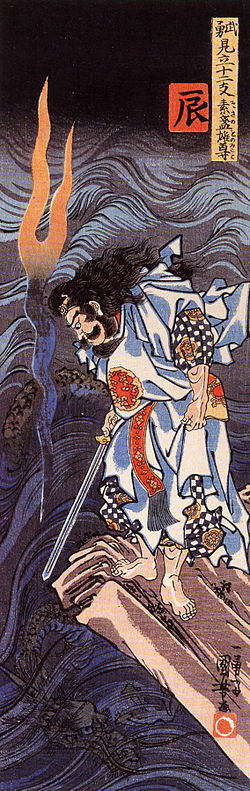
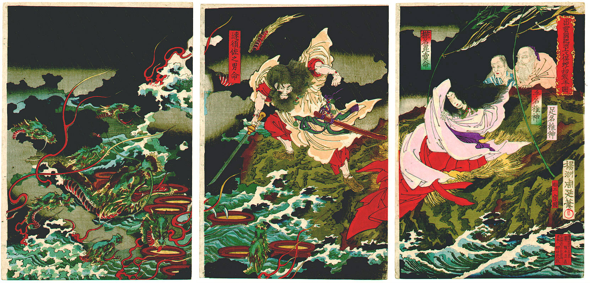

A mitologia japonesa explica o surgimento dos deuses, como o mundo foi
criado e a origem dos imperadores japoneses. Estas histórias estão em
dois livros: o kojiki e o nihonshoki, porém estes livros divergem em
alguns trechos.
Muitas divindades aparecem na mitologia japonesa, aqui são os mais
proeminentes: Por exemplo, Ninigi ou Ame-Nigishikun
Nigishiamatsuhiko-Hikono-Ninigi-no-no-Mikoto, também pode ser
abreviado como: Hikonoho-no-Ninigi ou Hono-Ninigi.

alt="Monte Takachiho, local da descida de Ninigi-no-Mikoto segundo a mitologia japonesa."
Mito da criação
Os deuses convocaram dois seres divinos à existência, o masculino
Izanagi e o feminino Izanami, e ordenou-lhes para criarem seus
primeiros lares. Para ajudá-los a fazer isso, os deuses deram ao
Izanagi e Izanami uma lança decorada com jóias, chamado Amenonuhoko
(lança do céu). As duas divindades eram a ponte entre o Céu e a Terra
(Amenoukihashi) e agitaram o mar com a lança do céu.

alt="Izanagi e Izanami sobre a ponte celestial Amenoukihashi
antes do ritual de criação do mundo."
Quando as gotas de água caíram da ponta da lança, a ilha Onogoro-Shima
foi formada. Eles desceram à ilha a partir de uma ponte do céu. Eles
tiveram dois filhos, Hiruko e Awashima, mas eram imperfeitos e não
eram considerados como deuses. Em seguida, eles colocaram as duas
crianças num barco que foi arrastado pela correnteza de Onogoro-Shima.
Então eles perguntaram aos deuses o que eles fizeram de errado. Após
receberem a resposta, Izanagi e Izanami decidiram se casar novamente e
seu casamento foi um sucesso.
Desta união nasceram o Ohoyashima, ou as oito principais ilhas do
Japão. Eles criaram muitas ilhas, muitas divindades e culturas.
Izanagi e Izanami
Izanagi e Izanami geraram todos os outros kamis (deuses) do mundo, mas
Izanami morreu ao dar à luz ao Kagutsuchi (encarnação de fogo).
Perdido em raiva, Izanagi matou Kagutsuchi. Sua morte também criou
dezenas de divindades.

Interpretação artística do mito.
Izanagi, inconformado com a morte de Izanami, empreendeu uma viagem a
Yomi, ou "a terra sombria dos mortos." As saídas de Yomi são guardadas
por criaturas terríveis, e é onde os mortos vão para, aparentemente,
apodrecer por tempo indefinido. Uma vez caída lá, a alma nunca mais
poderá voltar para a terra dos vivos.
Ela, prometendo retornar, diz que vai para o Submundo e que lá ele não
poderia ir, tendo de esperar. Izanagi espera, mas depois de muito
tempo resolve quebrar a promessa e vai atrás de Izanami.
Izanagi procura Izanami e rapidamente a encontra. Inicialmente,
Izanagi não poderia vê-la porque as sombras a escondiam, mas ele pediu
a Izanami para ela voltar com ele. Izanami disse que era tarde demais,
pois já tinha comido o alimento do submundo e pertencia agora à terra
dos mortos. Ela não poderia voltar à vida.
Izanagi ficou chocado com a notícia e concordou em retornar ao mundo
superior, mas antes pediu para deixá-lo dormir na entrada do submundo.
Enquanto ele dormia ao lado dela, Izanagi pega um pente que prendia o
cabelo de Izanami, acendendo fogo para usar como uma tocha.
Sob a luz da tocha, ele observa a forma horrível de Izanami, outrora
bela e graciosa. Agora era uma forma de carne em decomposição que dava
à luz a vários demônios, com vermes e criaturas demoníacas deslizando
sobre seu corpo.
Ela, percebendo a audácia de seu marido, manda os demônios o
perseguirem. Fugindo das criaturas demoníacas, Izanagi pega o pente e
o quebra, jogando seus pedaços no chão. Os demônios, famintos, devoram
os brotos de bambu que surgiram do pente.
Izanagi foge dos demônios e, rolando uma pedra enorme, os prende no
Yomi. Izanagi, furioso por Izanami lhe trair, usa os poderes do sol e
destrói todos os demônios.
E assim começou a existência da morte, causada pelo orgulho de
Izanami.
Sol, Lua e Mar
Enquanto Izanagi purificava-se no rio após se recuperar de sua descida
ao Yomi diversas divindades eram formadas em ornamentos e impurezas
que desprediam-se de seu corpo. Diversas divindades surgiram quando
ele mergulhou o rosto na água para se purificar. Os kamis mais
importantes foram criados a partir de seu rosto:

Amaterasu: (encarnação do sol) a partir de seu olho esquerdo

Tsukuyomi: (encarnação da lua) de seu olho direito

Susanoo: (encarnação do mar) do seu nariz
Izanagi dividiu o mundo entre eles. A deusa Amaterasu herdaria os
céus, Tsukuyomi tomaria o controle da noite e Susanoo seria o deus da
tempestade e dos mares.
Susanoo
Susanoo, descontente com a negociação destinada a remediar uma disputa
entre os seus dois irmãos, faz grandes patifarias à irmã Amaterasu,
'deusa do Sol', a ponto de a fazer fugir para uma caverna chamada
Iwayado, deixando o mundo na escuridão. Todos os outros kami,
reunidos, concebem então um plano para a fazer sair. Com grande
alarido, gritos e risos, despertam a curiosidade da deusa solar, que a
leva a entreabrir a entrada da caverna. Atraída por um espelho
colocado à sua frente, acaba por sair, sendo então fechada a caverna,
para a impedir de entrar novamente. Garantida de novo a luz, Susanoo é
condenado a pagar uma multa e a ser desterrado dos céus. Mais tarde,
ele arrepende-se e acaba por presentear a irmã com um esplêndido sabre
retirado do corpo de um dragão que ele matou.
Susanoo aparece em várias histórias. Uma história fala do
comportamento impossível de Susanoo contra Izanagi. Izanagi, cansado
de sofrer ataques de Susanoo, desapareceu no Yomi. Susanoo desgostoso
concordou, mas tinha negócios inacabados para resolver primeiro. Ele
foi para Takamagahara (céu) para dizer adeus a sua irmã, Amaterasu.
Amaterasu sabia que seu irmão não tinha boa intenção em mente e se
preparou para a batalha. Amaterasu pensando que Susanoo queria o
Takamagahara para si vai ao encontro de Susanoo.
Susano propõe um acordo para provar que suas intenções são boas.
Amaterasu concorda. Primeiro, Amaterasu pega a espada de Susano e cria
três deusas, as Munakata Sanjojin. Então, Susano pega um colar de
jóias de Amaterasu e nascem cinco deuses, todos homens.
Amaterasu diz que os deuses que nasceram a partir do colar de jóias
foram feitos a partir de um objeto seu, portanto são filhos dela.
Amaterasu afirma também que as deusas que nasceram da espada são
filhas de Susano. Todos os deuses dominavam um elemento da criação e
da destruição: o ar, a luz e a natureza. Ambos os deuses reivindicaram
a vitória. A insistência causou violentas campanhas que atingiu seu
clímax quando Susanoo jogou um 'cavalo morto celestial' sobre os
teares das criadas tecelãs de Amaterasu onde uma de suas criadas
morreu. Amaterasu fugiu e se escondeu na caverna chamada Iwayado.
Enquanto a deusa do sol desapareceu, as trevas cobriam o mundo.
Susanoo e Orochi
Susanoo desce a Izumo nas proximidades de um rio hoje conhecido como
Hiikawa. Lá, Susanoo percebe hashi sendo carregados pela correnteza e
decide subir o rio. Susanoo encontra o casal de idosos Ashinajichi e
Natejichi chorando. O casal tinha oito filhas, porém o monstro Yamata
no Orochi que possuía oito cabeças, oito caudas e olhos vermelhos e
vinha uma vez por ano e comia uma de suas filhas. Sua última filha,
Kushinadahime estava prestes a ser devorada. Susanoo, percebendo a
relação do casal de idosos com a deusa do sol Amaterasu, ofereceu sua
ajuda. O casal então promete a mão de sua filha se Susanoo
exterminasse o monstro. Susanoo mata Yamata no Orochi, se casa com
Kushinadahime e constrói um castelo para morar com ela.

alt="Susanoo lutando contra a serpente de oito cabeças Yamata no
Orochi em xilogravura tradicional."
Ōnamuji (Ookuninushi) era descendente de Susanoo. Ele, junto com seus
muitos irmãos, concorreu a mão da princesa Yakami de Inaba durante a
viagem de Izumo para Inaba. Ōnamuji sofreu muito devido a inveja de
seus irmãos. Perseguido por seus inimigos, ele se aventurou no reino
da Susanoo onde se encontrou com a filha do deus vingativo,
Suseri-hime. Susanoo testou várias vezes Onamuji mas no final, Susanoo
aprovou Ōnamuji e previu sua vitória contra os seus irmãos.
Ookuninushi e Sukunahikona desenvolvem o Ashihara no Nakatsu Kuni
criando as regras da agricultura, medicina e magia.
Tsukuyomi
Tsukuyomi ou Tsukiyomi, também conhecido como Tsukuyomi-no-kami, é o
deus da lua no xintoísmo e na mitologia japonesa. O nome Tsukuyomi é
uma combinação das palavras japonesas lua/mês (tsuki) e "ler;
contar"(yomu). Outra interpretação de seu nome é a combinação de
"Noite iluminada pela Lua" (Tsukiyo) e um verbo significando "Olhando
para" (miru). Ainda outra interpretação diz que o kanji para
"arco"(弓, yumi) foi corrompido com o kanji para "yomi". "Yomi" Também
pode se referir ao mundo subterrâneo, apesar desta interpretação não
ser bem aceita.
Tsukuyomi foi a segunda das "Três nobres crianças" nascidas quando
Izanagi, o Deus que criou a primeira terra, Onogoro-shima, lavou seu
olho direito enquanto se banhava para purificar-se de seus pecados
depois de escapar do mundo subterrâneo e das correntes de sua
enraivecida esposa, Izanami. De qualquer forma, em uma história
alternativa, Tsukuyomi nasceu de um espelho feito de cobre branco na
mão direita de Izanagi.
Depois de subir a escada celestial, Tsukuyomi viveu no "paraíso",
também conhecido como Takamagahara, com sua irmã Amaterasu, a Deusa do
Sol.
Ashihara no Nakatsu Kuni
Amaterasu e os outros deuses do Takamagahara declaram que eles
deveriam governar o Ashihara no Nakatsu Kuni, então governado por
Ookuninushi. Vários deuses são enviados a Ashihara no Nakatsu Kuni,
mas falham em seu objetivo. Amaterasu pergunta aos deuses quem deveria
ser o próximo enviado. Os deuses respondem que deveria ser
Itsunoohabari ou seu filho Takemikadzuchi.
Takemikadzuchi e Amenotohibune são enviados ao Ashihara no Nakatsu
Kuni. Lá chegando Takemikadzuchi finca a espada Totsuka no Tsurugi no
chão. Takemikadzuchi se senta e diz a Ookuninushi que Amaterasu
ordenara que Ashihara no Nakatsu Kuni fosse governado por um de seus
filhos. Takemikadzuchi vai então conversar com Kotoshironushi, filho
de Ookuninushi e Kotoshironushi se esconde. Em seguida vai conversar
com outro filho de Ookuninushi, Takeminakata. Takeminakata tenta medir
forças com Takemikazuchi, mas é derrotado.
Amaterasu envia então Takamimusubi para conversar com Ookuninushi.
Takamimusubi diz a Ookuninushi que Amaterasu lhe construiria um grande
castelo em troca do controle do Ashihara no Nakatsu Kuni. Ookuninushi
pede um grande castelo, para seus 180 filhos morarem e depois disso
desaparece. Este castelo é o santuário Izumo Taisha, em Shimane.
Prosperidade e eternidade
Ninigi conheceu a princesa Konohana-Sakuya (símbolo de flores), a
filha de Yamatumi (mestre das montanhas). Eles se apaixonaram e Ninigi
pediu a Yamatumi a mão de sua filha. Yamatumi ofereceu a mão de suas
duas filhas, Iwanaga (símbolo de pedra) e Sakuya (símbolo de flores).
Mas Ninigi escolheu Sakuya.
"Iwanaga é abençoado com a eternidade e Sakuya com a prosperidade",
disse em lamentação Yamatumi, recusando Iwanaga, sua vida será curta a
partir de agora. Devido a isso, Ninigi e seus descendentes tornaram-se
simples mortais.
Sakuya deu à luz três filhos. Os nomes das crianças foram Hoderi,
Hosuseri, e Howori.
Hoderi e Howori
Hoderi vivia de pesca no mar, enquanto seu irmão Howori vivia de caça
nas montanhas. Um dia, Howori perguntou ao seu irmão se trocaria de
lugar por um dia. Howori tentou pescar, mas não conseguiu nada e
também perdeu a vara de pescar de seu irmão. Hoderi furioso não
aceitou seu pedido de desculpas. Enquanto Howori estava sentado na
praia, perplexo, Shihotuti disse para ele viajar em um navio chamado
Manasikatuma com um destino desconhecido. Na sequência deste parecer,
Howori chegou à casa do Watatumi (mestre dos mares). Ali ele conheceu
Toyotama, filha de Watatumi e se casou com ela. Depois de três anos de
casamento, se lembrou de seu irmão e sua vara de pescar, em seguida,
falou com Watatumi sobre isso. Watatumi (mestre dos mares) rapidamente
encontrou o anzol preso na garganta de um peixe dourado e Howori
devolveu para o seu irmão. Watatumi também lhe deu duas bolas mágicas,
Sihomitutama, com poderes para provocar inundações e Sihohirutama, que
poderia causar terremoto e mandou Howori junto com sua namorada de
volta para sua terra.
Shinigami
Shinigami (死神), Deus da Morte; é uma entidade presente na cultura
japonesa. Seu trabalho é "levar" a alma dos humanos para o outro
mundo. Seria um pouco equivalente a figura conhecida da Morte no
Ocidente. Geralmente é usado para expressar qualquer deus da morte.
Por exemplo no budismo Enma é o deus que julga e pune depois da morte
(Jigoku) e no xintoísmo é a Izanami.